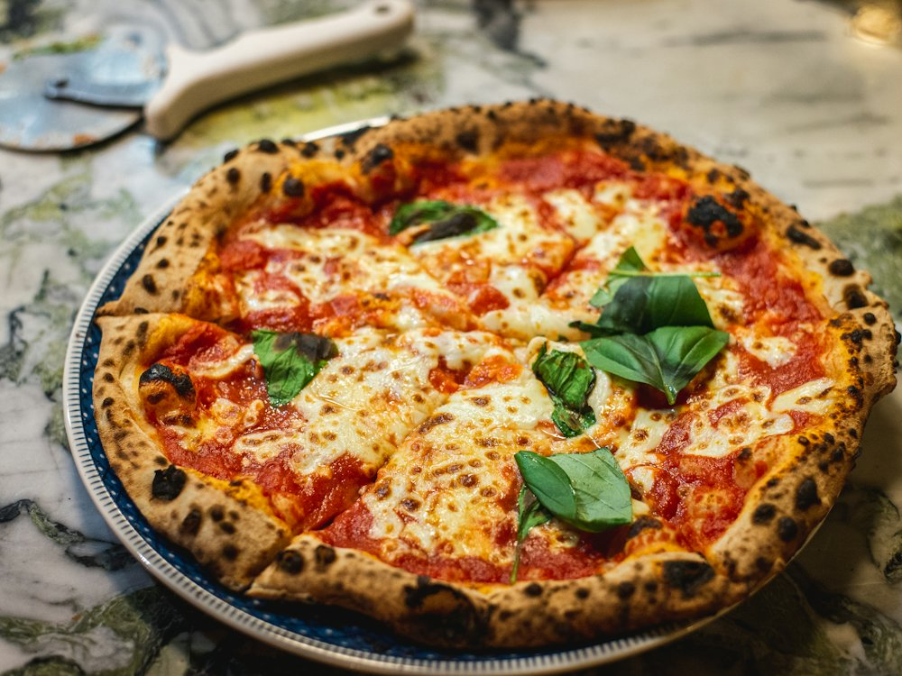

Del Papa
Ресторан · Итальянская · Алматы
Рейтинг
★ 4.4
731 оценок
Год открытия
2010
первый Del Papa открылся в Алматы в 2010 г. (forbes.kz)
Средний чек
≈8 000 ₸
оценка по типу заведения
Адрес и часы
📍 пр. Достык, 248, Алматы · Медеуский район
🕒 часы работы уточняются — смотрите в 2ГИС
О заведении
Семейная итальянская сеть холдинга ABR.
Меню
Рядом в справочнике
Degirmen · Degusto Coffee · Del Cappuccino · Del Papa · Delish · Diadema зал торжеств